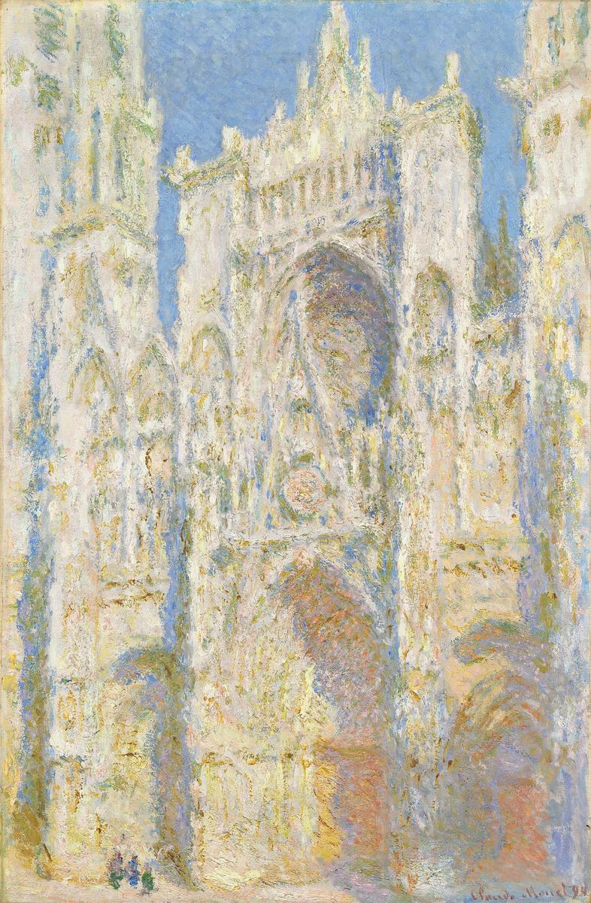

Rouen Cathedral (series)

Palette
- Bone · your word: Ecru
- Beige · your word: Beige
- Silver · your word: Silver
- Tan · your word: Tan
- Light steel blue · your word: Periwinkle
- Sand · your word: Tan
One of more than 30 views of the cathedral front that Monet painted in 1892–93 and finished in his Giverny studio in 1894. The stone is never plain grey: sunlit cream and tan against shadows of periwinkle blue.
Image
Wikimedia Commons · Public domain

Hex values are screen approximations. Every page lists its sources.